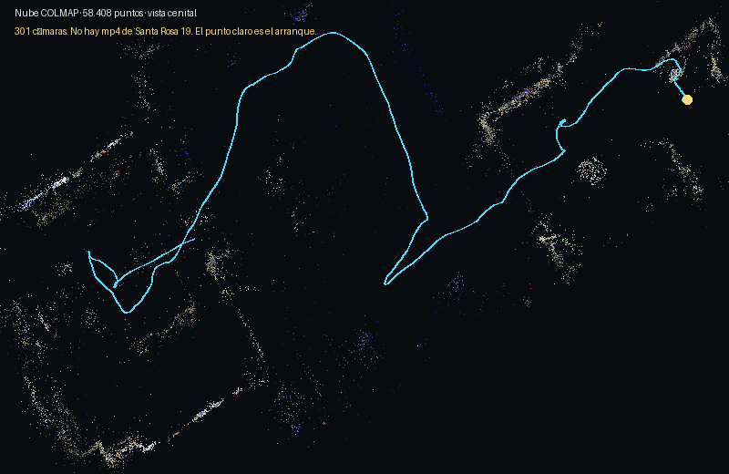
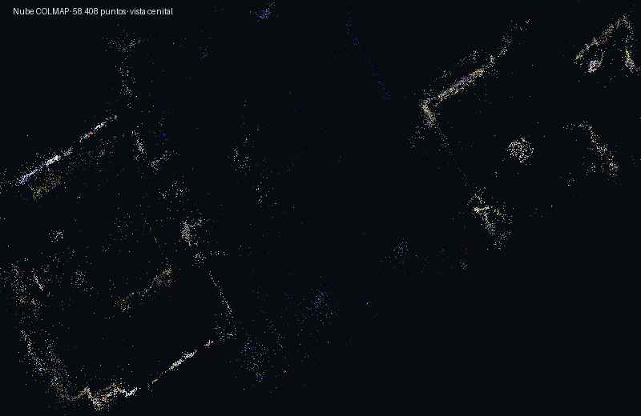
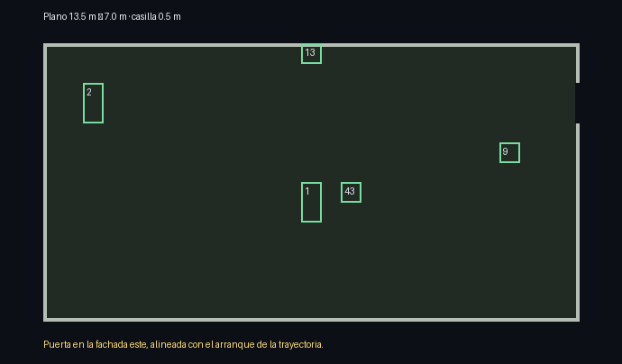
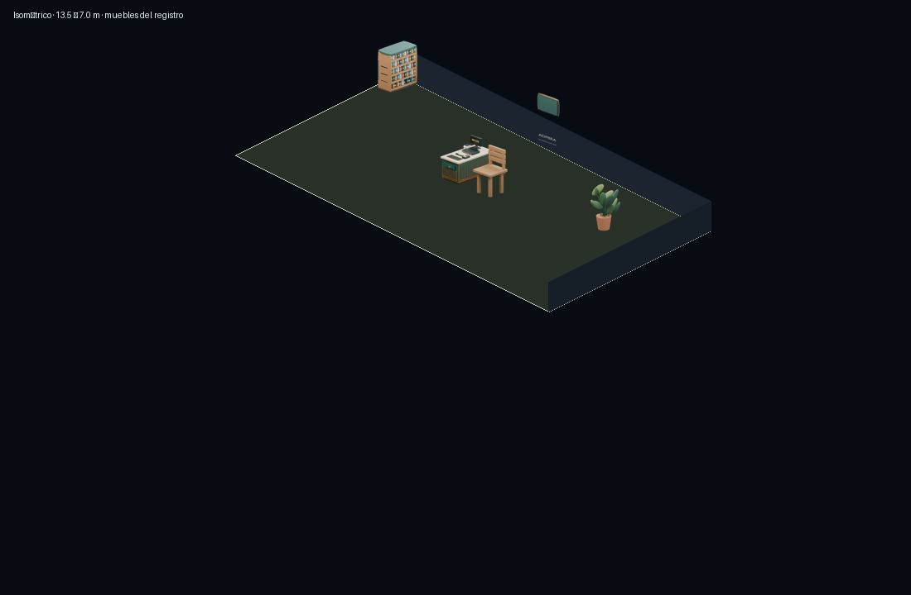
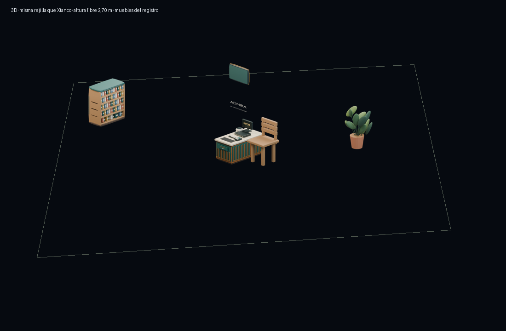

Leyendo el plano…
Del recorrido al 3D





La misma sala en el motor de Xtanco
El bloque xtanco de xpacio.json entra en el visor 3D de la Sneaker Xtore: columnas, filas, altura de pared y layout. Una casilla mide 0,50 m. La altura libre de 2,70 m es el clavo que pasa las unidades de COLMAP a metros; no es una cinta métrica.
Muebles del registro
| Número | Pieza | Casilla | Ficha |
|---|
Ficha
Elige una pieza.